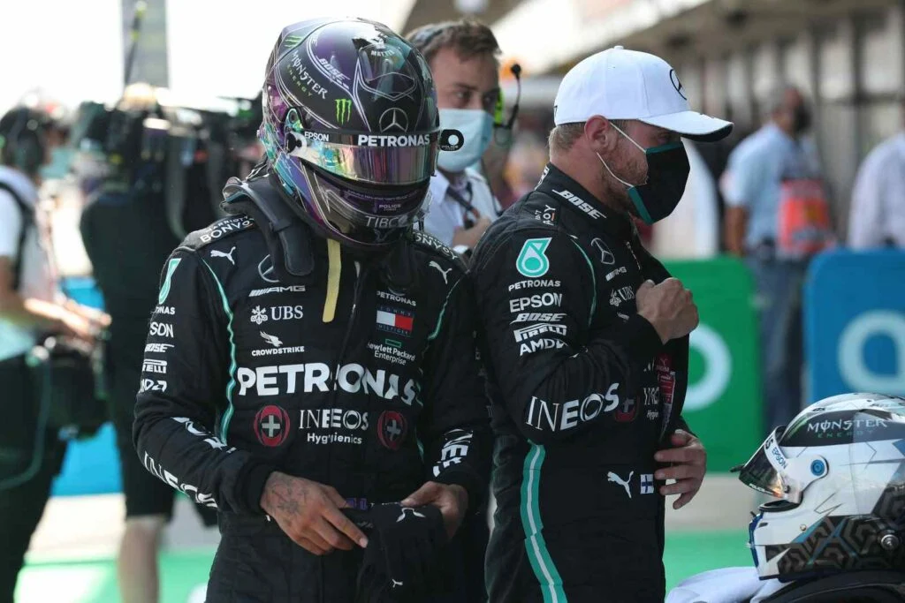
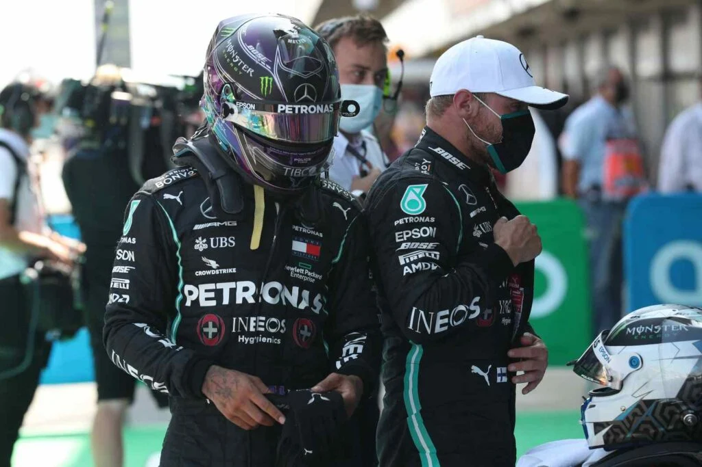
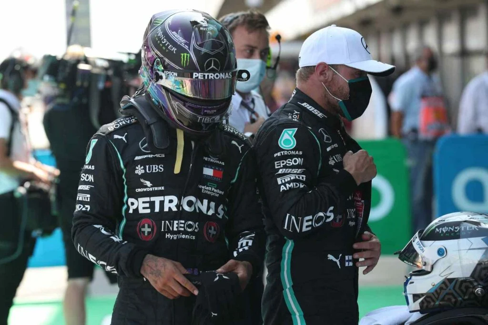
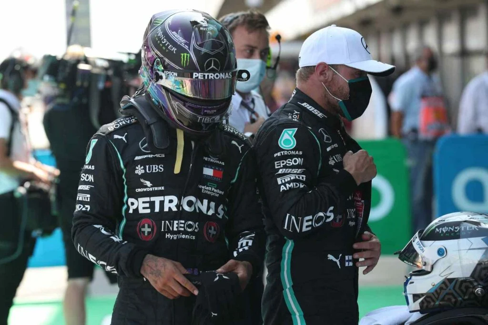

Jidá, Arábia Saudita, 26 Mar 2022 (AFP) - O sete vezes campeão mundial Lewis Hamilton foi eliminado neste sábado na primeira sessão (Q1) da classificação para o Grande Prêmio da Arábia Saudita de Fórmula 1 no circuito de Jeddah, enquanto seu companheiro de equipe da Mercedes, George Russell, conquistou a quarta posição. Hamilton não passou do 16º melhor tempo, em uma sessão em que apenas os 15 melhores se classificaram para o Q2.
É a primeira vez desde o GP do Brasil de 2017 que o piloto britânico cai na primeira sessão classificatória. O alemão Mick Schumacher, filho de Michael Schumacher, sofreu um acidente muito violento durante a classificação. O piloto de 23 anos perdeu o controle de sua Haas-Ferrari em uma série de curvas rápidas e bateu em alta velocidade na mureta que margeia a pista. A sessão foi interrompida por uma bandeira vermelha. Uma ambulância foi imediatamente ao local do acidente, mas nenhuma informação precisa foi comunicada sobre seu estado de saúde.
"Ouvimos que Mick estava consciente, saiu de seu veículo e estava sendo direcionado para uma instalação médica", tuitou a Hass. A corrida do GP da Arábia Saudita será disputada neste domingo. Classificação da primeira sessão (Q1) de classificação para o Grande Prêmio da Arábia Saudita de Fórmula 1, neste sábado em Jeddah.
De promessa a capitã da seleção, Natália esteve presente nos últimos três ciclos olímpicos. Além dos Jogos de Londres e de Tóquio, também disputou as Olimpíadas do Rio, quando a seleção caiu nas quartas de final para a China. A ponteira ainda conquistou uma prata e um bronze em Mundiais, em 2010 e 2014, respectivamente.